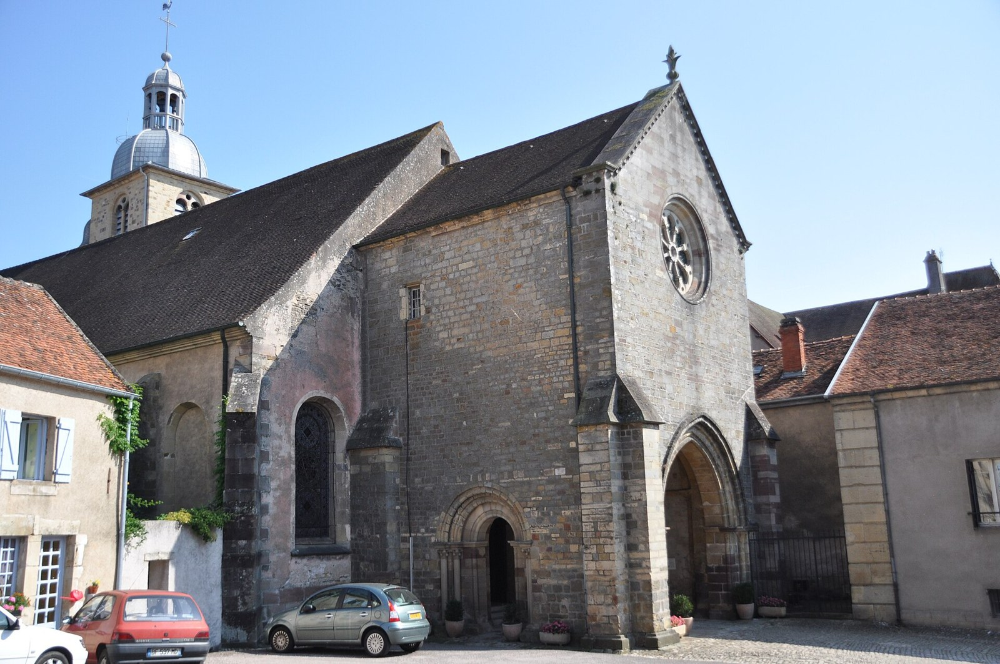
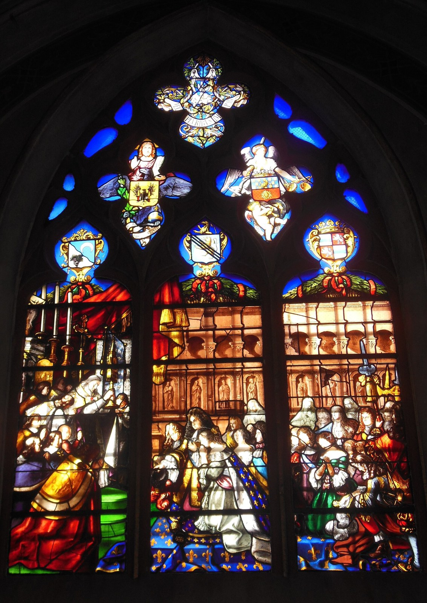
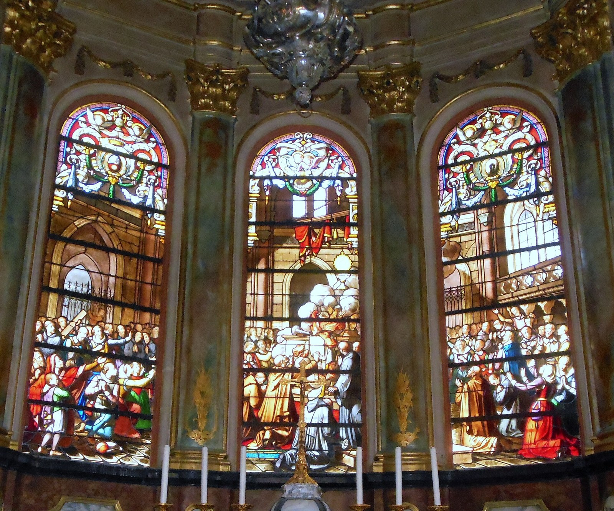
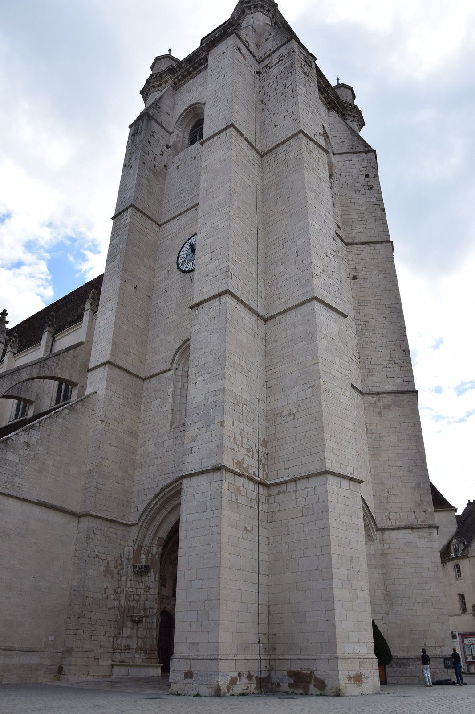
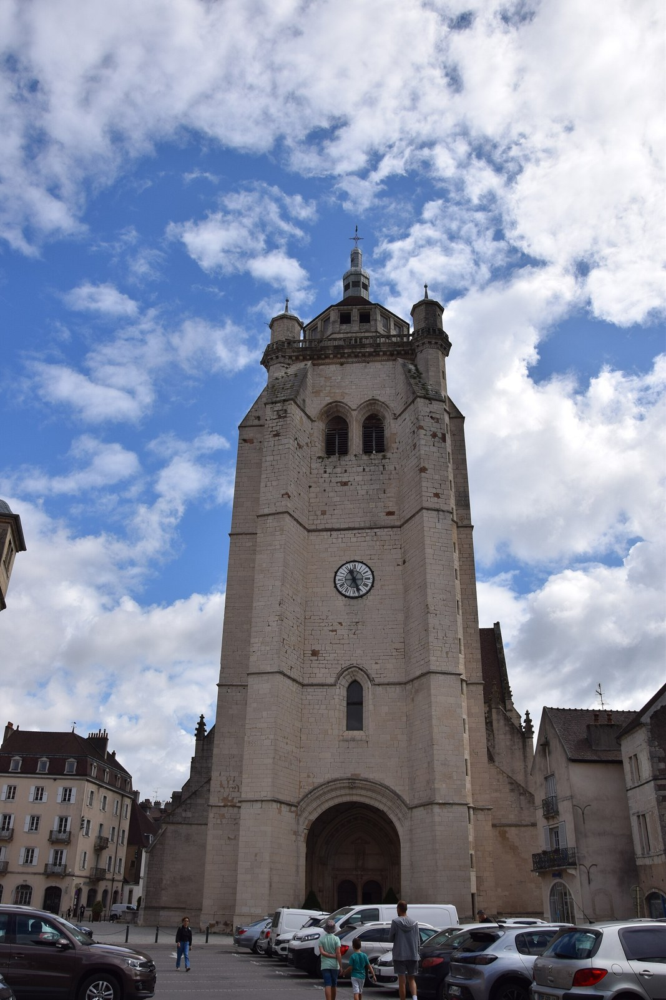

Ginette Mathis · Wikimedia Commons · CC BY-SA 3.0Faverney, 1608: o ostensório que não caiu
Reconhecido pela Santa Igreja CatólicaO RELATO
O FATO
Pentecostes de 1608. Na igreja da abadia beneditina de Faverney, no condado de Borgonha, os monges expuseram o Santíssimo num reposório para a adoração dos fiéis. Dentro do ostensório havia duas hóstias consagradas. Na noite de 25 para 26 de maio, uma lamparina deixada acesa incendiou o altar.
Às três da manhã, o sacristão Dom Jean Garnier encontrou a igreja cheia de fumaça e o reposório reduzido a cinzas. O ostensório, porém, estava no ar, sem apoio visível. Assim ficou por 33 horas, diante dos monges, dos capuchinhos de Vesoul e de uma multidão. As hóstias não queimaram.
A INVESTIGAÇÃO
Em 27 de maio, por volta das dez horas, durante uma missa, o ostensório desceu e pousou sobre o corporal. Os capuchinhos de Vesoul, chegados ainda durante o prodígio, assinaram um memorial ao arcebispo de Besançon, Ferdinand de Rye.
O arcebispo enviou três comissários a Faverney. Eles ouviram 54 testemunhas sob juramento, entre religiosos, párocos e leigos, e encerraram o inquérito em 4 de junho de 1608. Em julho do mesmo ano, o arcebispo declarou o milagre. Em dezembro, uma das duas hóstias foi levada em procissão à colegiada de Dole.
AS RELÍQUIAS HOJE
A hóstia de Dole se perdeu na Revolução Francesa. A de Faverney foi confiscada em 1793 e recuperada em 1795. Está até hoje na antiga igreja abacial, atual basílica, e sai em procissão todos os anos na segunda-feira de Pentecostes, dia da peregrinação da arquidiocese de Besançon.
Em 1864, sob Pio IX, a Santa Sé concedeu festa e ofício próprios das Santas Hóstias. O tricentenário, em 1908, teve congresso eucarístico nacional. Em 25 de maio de 2008, no quarto centenário, mais de 7 mil peregrinos acompanharam a missa presidida pelo cardeal André Vingt-Trois, arcebispo de Paris.
O QUE A SANTA IGREJA CATÓLICA DECIDIU
Milagre declarado pelo arcebispo de Besançon, Ferdinand de Rye, em julho de 1608, após inquérito com 54 testemunhas ouvidas sob juramento. Em 1864, sob Pio IX, a Santa Sé concedeu festa e ofício próprios das Santas Hóstias de Faverney. A hóstia é conservada na basílica de Faverney; peregrinação anual na segunda-feira de Pentecostes, organizada pela arquidiocese de Besançon.
FOTOS













Imagens do Wikimedia Commons, em domínio público ou Creative Commons, com crédito ao autor.
VÍDEOS
 ▶Un miracle visible pendant 33 heures.1000 Raisons De Croire · YouTube
▶Un miracle visible pendant 33 heures.1000 Raisons De Croire · YouTube ▶Le miracle eucharistique de Favernay, d'après l'exposition de Carlo AcutisLights in the Dark · YouTube
▶Le miracle eucharistique de Favernay, d'après l'exposition de Carlo AcutisLights in the Dark · YouTubeVídeos públicos do YouTube, de canais de terceiros. Abrem no YouTube.
COMO VISITAR
Abadia de Notre-Dame de Faverney
Faverney, França
FONTES
- Arquidiocese de Besançon (diocese-besancon.fr) — Lundi de Pentecôte : partez en pèlerinage à Faverney, 14 abr 2026
- Arquidiocese de Paris — Homilia do cardeal André Vingt-Trois no 4º centenário do Milagre de Faverney, 25 mai 2008
- Priorado Notre-Dame de Bethléem (Faverney) — Le miracle eucharistique de Faverney (25-27 mai 1608)
- Inventário do Patrimônio de Bourgogne-Franche-Comté — Dossiê IA70000527, Abbaye Notre-Dame de Faverney
VER O POST NO INSTAGRAMTODOS OS MILAGRES NO MAPA